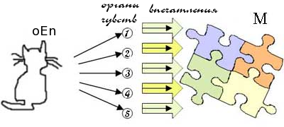
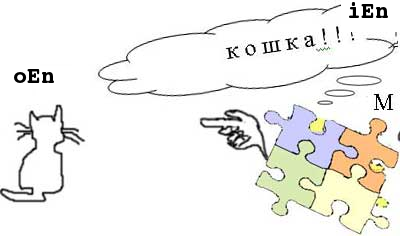

Gradual Grammar:

Часть вторая
4. Классы Слов
4.1. Что такое слово и зачем сознанию нужны классификации
Что такое слово?
- graL ”w”
- enL ”word”
Слово – это знак, имя, символ для обозначения того, что различает сознание.
А много ли оно может различить?
Еще как много – всего не перечесть, но не будем забывать, что при всей необъятности мира он—как показала GraGra—имеет всего только два вида наполнителей: En, да Re (=сущности & отношения), где отношение, Re, есть мета-признаком сущности, En.
Вот с неё и начнём.
С точки зрения сознания, M, сущности разделяются на внешние ему (сознанию) сущности физического мира—oEn—
- graL “oEn”
- enL “outer entity”
и внутренние, умозрительные сущности—iEn—
- graL “iEn”
- enL “inner entity”
Но такая сущность как «слово» (=w) под такой раздел не подпадает, поскольку является как oEn, так и iEn.
Своей формой (звуковой или начертательной, или т.д. и т.п.) слово, безусловно, сущность физическая.
Но зато своим содержанием – смыслом влагаемым в этот знак/имя, слово, бесспорно, сущность умозрительная, т.е. абстрактная.
Тем самым, слово вынуждает нас к выведению третьего вида сущностей – i&oEn.
Зачем, спрашивается, нужны все эти видоделения?
А для облегчения жизни сознанию – деления-распределения помогают ему быстрее справляться со своими обязанностями, а кроме того, дабы владеть ситуацией (и вообще чем бы то ни было) приходится разделять.
Чтоб не утонуть в неимоверной уйме слов ( в одном только английском языке их насчитывают более 500,000) сознание взбирается в спасательную шлюпку с надписью КЛАССИФИКАЦИЯ СЛОВ на борту.
Итак, что такое слово?
| вопрос (ruL) | № вопроса | ответ (ruL) | краткая запись ответа (graL) |
|---|---|---|---|
| часть чего? | 1 |
1) физической оболочкой слово – одна из производимым людьми сущностей; 2) внутренним содержанием оно часть языка (который есть частью сознания) |
oEn_w^human_artefacts
& iEn_w^L[^M] |
| из чего? | 2 |
1) внешне слово состоит из знаков составленных определенным образом;
2) внутренне – из смысла влагаемого сознанием в данные знаки |
w: signs_arrangement & signs_meaning |
| для чего? | 3 | назначение слова в том, чтобы служить сырьем/инструментом языка, L, при составлении предложений, iB, в процессе производства информации, i | ƒ(w)=L_bricks/tools |
Слова составляющие enL (и некоторые другие языки) GraGra распределяет на 7 (семь) классов, которые и предполагается рассмотреть в данной части GraGrы.
4.2. Происхождение классов слов
Как уже многажды повторялось, слова это знаки для обозначения сущностей, En, пребывающих во вселенной, их признаков и мета-признаков, т.е. отношений, Re.

Рассмотрим типичный случай применения помянутых знаков.
Благодаря тому, что некая (внешняя) сущность, oEn, произвела ряд впечатлений на комплектующиеся с сознанием, M, органы чувств (обозначены на схеме кружочками), сознание, M, обнаруживает присутствие данной сущности, oEn.
Совокупность впечатлений от внешней сущности на органы чувств и есть отношением, возникшим между сущностью и сознанием.
Слова применяемые для наименования отношений называются глаголами, V
- graL “V”
- enL “verb”
-
Прежде, чем открыть свой закон, Ньютон обнаружил, что во вселенной существует яблоко, вступившее в отношение с его темечком и имя этому отношению «трахать».
Впечатления извне взятые по отдельности (на Схеме 1 они представлены прямыми стрелами) являются физическими признаками oEn и называются именами прилагательными (для обозначения) внешних признаков—oAT.
- graL “oAT”
- enL “outer property adjective”
Физические признаки, oAT, скажем «зеленый», «мягкий», «солоноватый», передаются сознанию от органов восприятия как их впечатления, а затем оцениваются сознанием, т.е. получают упаковку из ощущений/мнений типа «странный», «противный», «влекущий». И это уже внутрисознанные (на Схеме 1 они обозначены блочными стрелами) признаки—iAT
- graL “iAT”
- enL “inner property adjective”
—внутрисознанных сущностей, iEn – представлений сознания о внешней сущности, которую довелось прочувствовать.
Находясь под впечатлениями от сущности вступившей в отношение с сознанием, оно—сознание—производит сопоставление/сверку признаков (как oAT, так и iAT) данной сущности с составленной и представленной в памяти, dbM, картиной мира, чтобы из этой базы данных подобрать соответсвующее имя существительное – oN
- graL “oN”
- enL “outer entity name”
– для данной сущности oEn, а заодно и определить как ведет себя эта сущность по отношению к сознанию («удаляется», «скалится» и т.д.)

Отношения с внешними сущностями, oEn, обозначаются глаголами вида oV
- graL “oV”
- enL “outer relation name”
тогда как отношения внутренние (типа «сопоставлять», «припоминать», «восторгаться») обозначаются глаголами вида iV
- graL “iV”
- enL “inner relation name”
Нелишне снова повторить, что сознание вступает во внутренние отношения не с внешними сущностями, а со своими представлениями о ней, т.е. с iEn.
Проще говоря, сущность – это существительное: En = N,
а отношение – это глагол:
Re = V.
Отношение, как и сущность, тоже имеет признаки, для обозначения которых применяются слова именуемые наречиями – AB
- graL “AB”
- enL “relation property name”
Таковы общие принципы распределения слов на классы, POS
- graL “POS”
- enL “part of speech”
4.3. Глоссарий классов слов (частей речи) английского языка, POS^enL
Классы слов английского языка можно разделить на две основные группы:
- - слова инфоносители (их 4 класса), несут информацию: o чём собственно речь;
- - слова инфооформители, (таких 3 класса) оформляют информацию в подходящие инфоблоки.
К первой группе относятся:
глагол – для наименования отношений;
имя прилагательное – для уточнения имен сущностей; и
наречие – для уточнения имен отношений.
Слова из второй группы тоже несут информацию, но основное их назначение – упрощать (сокращать затраты на) производство инфоблоков (iB являются способом существования информации).
Эта группа содержит:
предлог, и
союз.
Ну, а теперь определим кто из них кто по отдельности:
1) N (=имя существительное)
- graL “N”
- enL “noun”
К данному классу слов принадлежат слова применяемые для наименования сущностей:
Например: fox.
2) V (=глагол)
- graL “V”
- enL “verb”
К данному классу слов принадлежат слова применяемые для наименования отношений:
Например: understand.
3) AT (=имя прилагательное)
- graL “AT”
- enL “adjective”
К данному классу слов принадлежат слова применяемые для наименования признаков сущностей:
Например: brown fox.
4) AB (=наречие)
- graL “AB”
- enL “adverb”
К данному классу слов принадлежат слова применяемые для наименования признаков признаков (sic!):
Например: very red; jump quickly
(sic!) Здесь нет опечатки.
При механическом подходе запросто соскользываешь в сентенцию, что «наречие – наименование признаков отношения».
Однако, само-то отношение ни что иное, как – признак/свойство сущности. Вернее, отношение это целый букет признаков объединяемых сознанием в единый мета-признак, т.е.отношение, Re, имя которому — «глагол», V.
Наречия, AB, именуют признаки не только мета-признаков, Re, но и единичных признаков, AT, сущности, En.
5) MW (=местоимение)
- graL “MW”
- enL “mask-word”
К данному классу слов принадлежат слова применяемые для подмены наименования сущностей единообразными словами-фишками:
Например: you.
6) PS (=предлог)
- graL “PS”
- enL “preposition”
К данному классу слов принадлежат слова применяемые для указания координат пребывания сущностей и/или направления/назначения отношений:
Например: under, to
7) OW (=союз)
- graL “OW”
- enL “operator-word”
К данному классу слов принадлежат слова применяемые для упрощения/ускорения процесса производства i.
Например: or
4.4. Заключение
При грамматическом подходе слово превращается в часть речи, обозначаемом на языке GraGra символом POS
- graL “POS”
- enL "part of speech"
Слова делятся на классы двух разновидностей:
-
инфоносы, cPOS
- graL “cPOS”
- enL "context part of speech"
-
инфооформители, fPOS
- graL “fPOS”
- enL "functional part of speech"
Данные подклассы состоят из:
cPOS fPOS N,
V,
AT,
AB,
MWPS,
OW